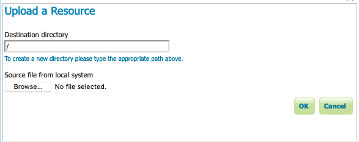
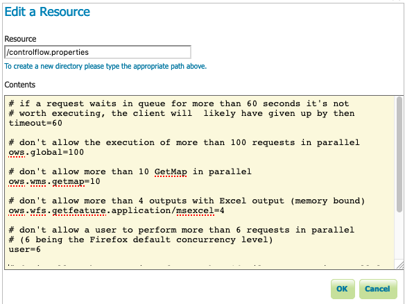
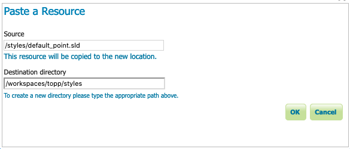
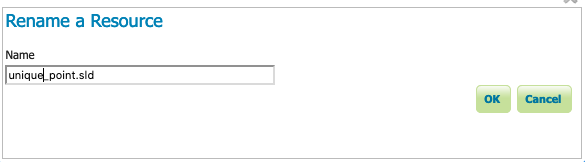

Resource Browser¶
The Resource Browser provides a tree showing configuration folders, along with actions to edit and manage resources.
Resource Browser¶
User interface elements:
Resource tree is used to explore configuration folders and resource items.
Upload uploads files to GeoServer. Select a directory to enable this tool.
Upload a resource¶
Download is used to download a selected resource from GeoServer as a file.
New resource creates a new text file in the selected directory. The Edit Resource dialog is used to record the resource location, and the contents.
Edit a Resource (New File)¶
Edit a selected resource.

Edit a Resource (Existing File)¶
Use Cut, Copy, and Paste to move resources between folders.
Paste a Resource¶
Rename to rename a selected resource.
Rename a Resource¶
Delete to remove a selected resource.

Delete a resource¶
Before you start¶
The resource browser is used to manage configuration resources in environments that do not provide direct disk access:
When running GeoServer on a remote machine it can be difficult mange the icons and fonts used for effective styling
Some cloud deployments of GeoServer operate without a data directory. In these environments the resource browser is used to manage items stored in a database or cloud storage rather than a file system.
Folders are visual only, when creating or uploading a resource you can type a path and folders will be created as needed.
Warning
Please use this tool with caution:
Configuration files managed by the web administration application can be reviewed and even modified using this tool.
It is not advised to edit these files directly as GeoServer must reload its Catalog to notice these changes.